install.packages("V:/Applications/R Course/Packages/LWPTrends_1.0.0.tar.gz", repos = NULL,
type = "source")Lesson 6: Trend Analysis
1 Overview
This lesson is designed to introduce you to the ‘LWPTrends’ package. This package is an internal package but has been built around functions developed by Ton Snelder and Caroline Fraser from LWP. Additional functions have been developed by me (James Dare) to make the LWP functions more applicable to BOPRC data.
The main packages that we will use in this tutorial are:
- tidyverse
- outliers
- plyr
- ggpubr
- NADA
- gam
- conflicted
Before attempting to install these packages, make sure your Primary CRAN Repository is set to:
- “New Zealand [https] - University of Auckland”
To check this, click ‘Tools’ –> ‘Global Options’ –> ‘Packages’. Click ‘Change’ if you need to adjust this.
You can download most packages by clicking on the ‘Install’ button on the ‘packages’ tab in the lower right window pane. Then in the Install Packages popup, select ‘Repository (CRAN)’ from the ‘Install from’ drop box and type the name of the package you wish to download (e.g., dplyr).
We will also use an internal package:
LWPTrends will need to be installed manually from a tar file:
Once all of these packages are installed you can load them using the ‘library’ function:
library(tidyverse)
library(outliers)
library(plyr)
library(ggpubr)
library(NADA)
library(gam)
library(LWPTrends)
library(conflicted)For those that are new to R, ‘plyr’ is the old version of dplyr, which is part of the tidyverse. Unfortunately, the LWPTrends package relies heavily on ‘plyr’ so we have to use it, however tidyverse uses the newer version, ‘dplyr’. This causes problems because both packages have functions with the same name, yet operate in different ways (remember that conversation we had on the first day).
We will manage this problem using the ‘conflicted’ package. This package allows us to tell R to prefer the ‘dplyr’ versions of these functions over the ‘plyr’ versions. There are only seven conflicted functions so it shouldn’t affect the functionality of the ‘LWPTrends’ package.
conflict_prefer("summarise", "dplyr")
conflict_prefer("mutate", "dplyr")
conflict_prefer("arrange", "dplyr")
conflict_prefer("mutate", "dplyr")
conflict_prefer("rename", "dplyr")
conflict_prefer("select", "dplyr")
conflict_prefer("summarise", "dplyr")
conflict_prefer("filter", "dplyr")Today we will be looking at two different datasets which we will use to run two different variants of trend analysis. We will start with a simple example of annual MCI data from ‘Waiari at Te Puke Highway’, before moving on to a monthly NNN dataset from Rangitaiki at Te Teko. We will use the latter to demonstrate seasonal and co-variate (flow) adjustment. Both datasets can be found in the ‘Datasets’ folder.
2 Macroinvertebrate Data
Let’s start by loading the macroinvertebrate dataset:
MCI_Data <- read.csv("./data/MCI_Waiari.csv")Open up the dataset by double clicking on the ‘MCI_Data’ object in the data panel (upper right corner). Notice that there are no date or time stamps. We only have a ‘Period’ to work with. Trend analysis requires a time stamp, so let’s convert the period into a date where we assume the sample is collected on the 1st January each year. First we need to create a column called ‘Year’ which takes the year component from the ‘Period’ string. The substring function allows you to subset a string, you just need to provide a point to start and end. In this case, we want to start at the 1st character and end at the 4th character.
MCI_Data <- MCI_Data %>%
mutate(Year = substring(Period, 1, 4))Now we need to convert the year into a date object where the day and month will be ‘01-01’ i.e., the 1st of January.
Challenge 1: Create another column called ‘myDate’ which is equal to the column ‘Year’ combined with ‘01-01’. Hint - you will need to do this in two steps. First create a string using the ‘paste0’ combined with ‘01-01’. Secondly, convert that string to a Date using as.Date(). You can do this in one line of code. Finally, select the columns: ‘Aquarius._SIteID’,‘myDate’,‘MCI’, and create a new column called ‘analyte’ which is equal to “MCI”.
Click to see a solution
MCI_Data <- MCI_Data %>%
mutate(myDate = as.Date(paste0(Year, "-01-01"), tz = "etc/GMT+12")) %>%
select(Aquarius._SIteID, myDate, MCI) %>%
mutate(analyte = "MCI")Great. Look at your dataset and you should have four columns: ‘Aquarius._SIteID’,‘myDate’,‘MCI’, and ‘analyte’. The LWPTrends package requires specific names for some columns in order for functions to work. The timestamp should be in a date format called ‘myDate’ and the parameter should be called ‘analyte’.
Now we have to prepare the dataset for trend analysis. This is set out in seven repeatable steps which each involve a specific LWPTrends function.
- Append date information to the dataset.
The first function is ‘GetMoreDateInfo()’. This adds on the necessary information that allows steps 3-6 to determine which year, month, and quarter each date relates to.
#Add on time increment and extra date information - NOTE if this dataset was is based on Water Years firstMonth = 7
MCI_Data <- GetMoreDateInfo(MCI_Data)
- Process censored values.
Now we need to apply the ‘RemoveAlphaDetect()’ function, which takes a dataframe that might include censored values (specified as the prefix > or <,column is type character) and returns face values and information about the nature of the censoring.
In this case, our data is uncensored, but we still need to run this function to move to the next stage.
#Process censored values
MCI_Data <- RemoveAlphaDetect(MCI_Data,ColToUse="MCI")This function will provide a new column ‘RawValue’ with the raw data, alongside two additional columns that detail whether each value was censored and what type of censor it was. This information is passed to the trend analysis function in future steps.
The LWPTrends package handles censored values in two ways. For point statistics such as means, standard deviations or quantiles, left censored values are imputed using the regression on order statistics (ROS) method, while right censored values are imputed using the survreg method. Censored values used to calculate Kendall’s S and its p-value are handled in the manner recommended by Helsel (2005, 2012). Refer to the LWPTrends help document for more information.
- Inspect the data.
Now it is time to inspect our dataset using ‘InspectTrendData()’. This function will provide important diagnostic output, while also appending the dataset with additional columns that are necessary to continue with trend analysis. There are a number of arguments that can be input to the InspectTrendData() function, but the one that we need to worry about is the ‘EndYear’, ‘propYearTol’, and ‘propIncrTol’. End year, is just the year that you want the analysis to end. This is required, but can also be used in conjunction with ‘TrendPeriod’ to shorten the dataset. The ‘propYearTol’, and ‘propIncrTol’ refer to the acceptable proportion of years and time increments that must have observations. The default for these values is 0.9, i.e., 90% of years and time increments must have values.
Let’s run the data inspection using these defaults to see what happens.
MCI_Inspect <- InspectTrendData(MCI_Data,
EndYear = max(MCI_Data$Year),
ReturnALLincr=TRUE,
do.plot = TRUE,
mymain="Example 1",
UseMidObs=TRUE,
Year="Year",
propYearTol = 0.9,
propIncrTol = 0.9)The InspectTrendData object contains three sub-objects, stored in a special type of object class called a ‘list’. You can access sub-objects using the syntax ‘ListName[[SubList_Number]]’. The first sub-object is an amended dataframe, the second is the output of an analysis that determines the best time increment to run trend analysis on, and the third produces a series of diagnostic plots.
We need to look at the second sub-list object.
MCI_Inspect[[2]] Incr TrendPeriodL nobs nYear propYear nIncrYear propIncrYear propCen
1 Month 21 18 18 0.8571429 18 0.07142857 0
2 BiMonth 21 18 18 0.8571429 18 0.14285714 0
3 Qtr 21 18 18 0.8571429 18 0.21428571 0
4 BiAnn 21 18 18 0.8571429 18 0.42857143 0
5 Year 21 18 18 0.8571429 18 0.85714286 0
nCenLevelsLT nCenLevelsGT nFlow DataOK
1 0 0 0 FALSE
2 0 0 0 FALSE
3 0 0 0 FALSE
4 0 0 0 FALSE
5 0 0 0 FALSEThis output shows the possible time increments in the leftmost column, followed by a range of other column outputs. Notice the final column ‘DataOK’ states FALSE for all time increments, which is essentially saying that we don’t have enough data to satisfy any of the condtions for any time increment. Take a look at the ‘propYear’ and ‘propIncrYear’ columns and not the values. Any thoughts on why his might have failed?
This might make more sense if we look at the diagnostic plots. The complicated looking ‘ggarrange’ call below is complicated because it is calling sub-list components directly rather than saving them as different objects (e.g. plot1, plot2, plot3 etc.). It is also nesting a three-plot ggarrange object as the second row of another ggplot object. This allows you to see a large version of the time series data, and have smaller versions of the matrix plots. This comes directly from Ton and Caroline (don’t blame me..), but I think it makes a very handy diagnostic dashboard.
ggarrange(MCI_Inspect[[3]][[1]],
ggarrange(MCI_Inspect[[3]][[2]],
MCI_Inspect[[3]][[3]],
MCI_Inspect[[3]][[4]],nrow=1,align="h"),nrow=2)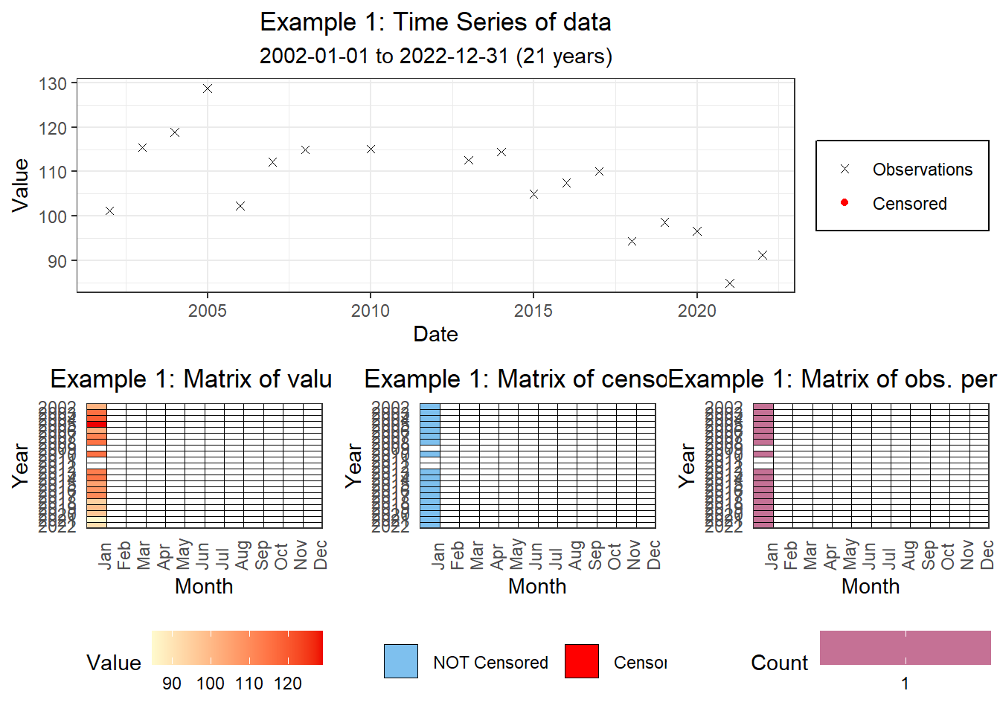
Hopefully you can see that we have gaps in 2009, 2011, and 2012. These gaps mean that we only have observations for 85% of years and 85% of time increments if we run an annual trend analysis.
We have two options, either we reduce the trend analysis period to say 2013-2022, or we make proportion of observations requirement more lenient. Let’s do the latter.
Challenge 2: Add ‘Change the propYearTol and propInrTol requirements to 0.8 in the InspectTrendData function. Make sure this is defined as an object named ’MCI_Inspect’. Look at the second sub-list object to see if anything has changed
Click to see a solution
MCI_Inspect <- InspectTrendData(MCI_Data,
EndYear = max(MCI_Data$Year),
ReturnALLincr=TRUE,
do.plot = TRUE,
mymain="Example 1",
UseMidObs=TRUE,
Year="Year",
propYearTol = 0.8,
propIncrTol = 0.8)
MCI_Inspect[[2]] Incr TrendPeriodL nobs nYear propYear nIncrYear propIncrYear propCen
1 Month 21 18 18 0.8571429 18 0.07142857 0
2 BiMonth 21 18 18 0.8571429 18 0.14285714 0
3 Qtr 21 18 18 0.8571429 18 0.21428571 0
4 BiAnn 21 18 18 0.8571429 18 0.42857143 0
5 Year 21 18 18 0.8571429 18 0.85714286 0
nCenLevelsLT nCenLevelsGT nFlow DataOK
1 0 0 0 FALSE
2 0 0 0 FALSE
3 0 0 0 FALSE
4 0 0 0 FALSE
5 0 0 0 TRUEHooray, the ‘Year’ time increment now has ‘TRUE’ in the ‘DataOK’ column. We can move on, but first we need to save the appended datasets for the next step.
MCI_Data <- MCI_Inspect[[1]]- Check for seasonality
We can skip this step given that we are using annual data, i.e., there are no seasons.
- Define a co-variate and test relationship.
Again, we can skip this part given that we will not be adjusting our data based on a co-variate. We will explore this with the WQ dataset.
- Run trend analysis.
We know that there is no seasonality in our data so we will use the function ‘NonSeasonalTrendAnalysis()’. Again, this produces a list with two sub-list items. The first is the trend analysis results, and the second is a plot that shows you the trend analysis output in graphical form. The graph is shown below.
MCI_Trend_Analysis_Output<-NonSeasonalTrendAnalysis(MCI_Data,mymain="Ex 1 Raw Trend",do.plot=T)
MCI_Trend_Analysis_Output[[2]]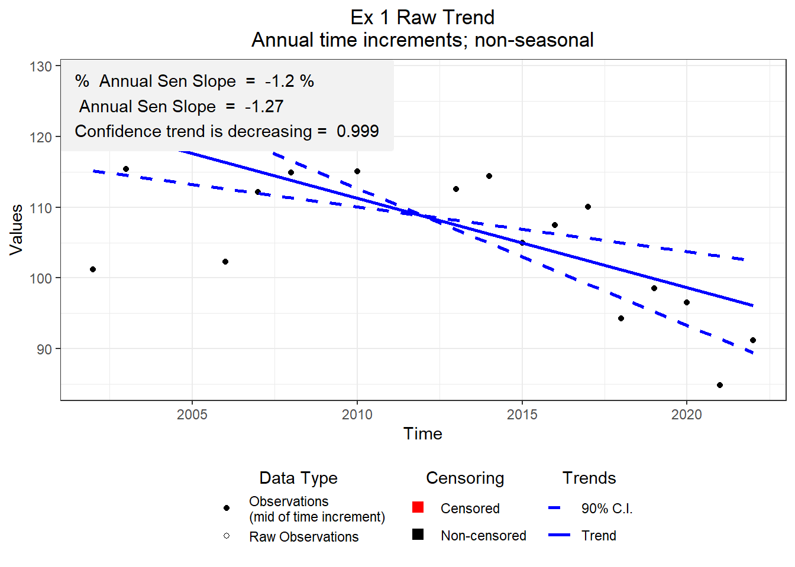
- Classify the output.
We can see that the trend is decreasing over time, but does this mean that things are improving or degrading and what confidence do we have around this? The ‘AssignConfCat()’ function can classify the trend output in a number of different ways, ranging from full IPCC categories to simplified LAWA categories. We are more familiar with the latter so we will use the simple method.
Trend direction means different things to different analytes. For example, an incresing trend for nitrate might be a bad thing, but an increasing trend for clarity might be a good thing. Therefore we need to tell this function what analyte we just analysed, and what analytes should be interpreted in reverse. The default reverse analytes for this function are ‘MCI’ and ‘CLAR’, which means that we just need to tell the function that we are dealing with MCI. However, for clarity we will include ‘Reverse’ in the function arguments. Again, it is looking for the ‘analyte’ column, which has dropped off in the trend analysis process and needs to be recreated.
We will use this function to create a new column called ‘Direction’ which will contain the trend analysis category.
MCI_Trend_Analysis_Output <- MCI_Trend_Analysis_Output[[1]]
MCI_Trend_Analysis_Output$analyte <- "MCI"
MCI_Trend_Analysis_Output <-MCI_Trend_Analysis_Output %>%
mutate(Direction = AssignConfCat(MCI_Trend_Analysis_Output,CatType="Improve",Reverse=c("VC","MCI")))
MCI_Trend_Analysis_Output nObs nTimeIncr S VarS D tau Z p C
1 18 18 -83 697 153 -0.5424837 -3.105971 0.00189655 0.9990517
Cd prop.censored prop.unique no.censorlevels TimeIncr SeasIncr
1 0.9990517 0 1 0 Annual NonSeasonal
Median AnnualSenSlope Sen_Lci Sen_Uci AnalysisNote
1 108.7808 -1.266876 -1.938812 -0.6352487 ok
Percent.annual.change TrendDirection analyte Direction
1 -1.164614 Decreasing MCI Very likely degradingLook in the last column and we can see that the trend is ‘Very likely degrading’.
Congratulations, you have just completed your first trend analysis using the LWPTrends package. Now for something a bit more challenging.
3 River Water Quality Data
The next dataset contains four analytes (TN, NNN, TP, and DRP) collected from two sites (Rangitaiki at SH5 and Rangitaiki at Te Teko) on the Rangitaiki River.
Challenge 3: Load the ‘DF_for_Trends.csv’ dataset and ensure that the Time column is formatted as a timestamp.
Click to see a solution
WQ_Data <- read.csv("./data/DF_for_Trends.csv")
WQ_Data <- WQ_Data %>%
mutate(Time = parse_date_time(Time, orders = c("%Y-%m-%d %H:%M:%S","%Y-%m-%d"),tz="etc/GMT+12"))Let’s view the data so we can see what we are dealing with.
Challenge 4: Create a ggplot where x=Time and y=Value and facet this by ‘LocationName + analyte’ so we can look at all variables. You can also add ‘colour=analyte’ for geom_point if you wish.
Click to see a solution
WQ_Data %>%
ggplot(aes(x=Time, y=Value))+
geom_point(aes(colour=analyte))+
theme_bw()+
facet_wrap(~LocationName+analyte,scales="free")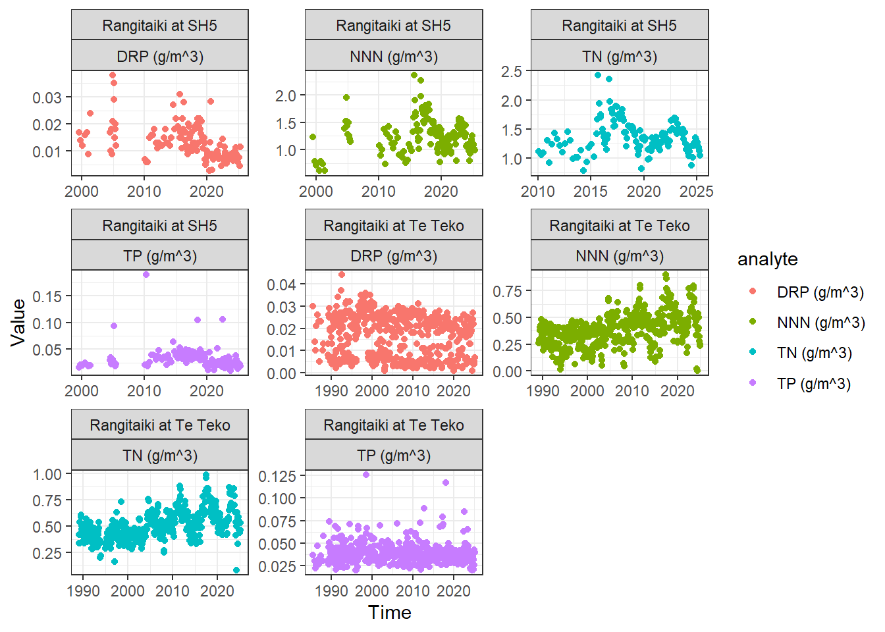
We can also look at which points have associated discharge measurements and if discharge seems to be increasing over time.
WQ_Data %>%
ggplot(aes(x=Time, y=Value))+
geom_point(aes(colour=Discharge))+
theme_bw()+
facet_wrap(~LocationName+analyte,scales="free")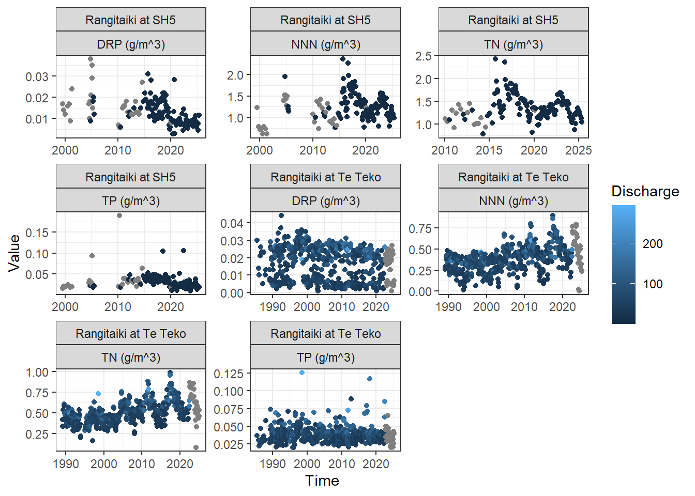
We might also decide that we want to remove outliers. Outliers are difficuly to remove manually, but fortunately there is a package called ‘outliers’ that can help. The function of interest within the outliers package is called ‘scores()’ but this requires a fair bit of data manipulation to adapt to our datasets.
But don’t fret, I have developed a function called ‘Outliers_Z_Score()’ which does all the hard work for you. All you need to do is input your dataframe in the form of “LocationName”, “Site”, “Time”, “analyte”, “Value”, and set the probability that you are happy with. I called this function ‘Outliers_Z_Score’ but you actually use other methods as well, just set the ‘type’ input to one of the following: (“z”, “t”, “chisq”, “mad”). This function can either return a dataframe of ‘outliers’ or a dataframe of non-outlier, i.e., ‘values’.
We will use a probability of 0.99 and use a z score to define outliers in our dataset. We can then compare this to our original dataset and create a new variable that defines which values are outliers.
#run the outliers function. This creates a dataset of outlier values
Value_Output <- Outliers_Z_Score(dataset=WQ_Data %>% select("LocationName", "Site", "Time", "analyte", "Value"),
probability = 0.99,output = "outliers",type="z")
#create a unique column so we can compare this to our original dataset.
Value_Output <-Value_Output %>%
mutate(Unique = paste0(Site,Time,Parameter))
#create a variable in the original dataset so we can identifiy our outliers.
WQ_Data <- WQ_Data %>%
mutate(Unique = paste0(Site,Time,analyte)) %>%
mutate(Outlier = ifelse(Unique %in% Value_Output$Unique, TRUE, FALSE)) %>%
select(Site, LocationName,Time,analyte,Value,Discharge,Outlier)
#create a plot so we can visualise our outliers.
WQ_Data%>%
ggplot(aes(x=Time, y=Value))+
geom_point(aes(colour=Outlier))+
theme_bw()+
facet_wrap(~LocationName+analyte,scales="free")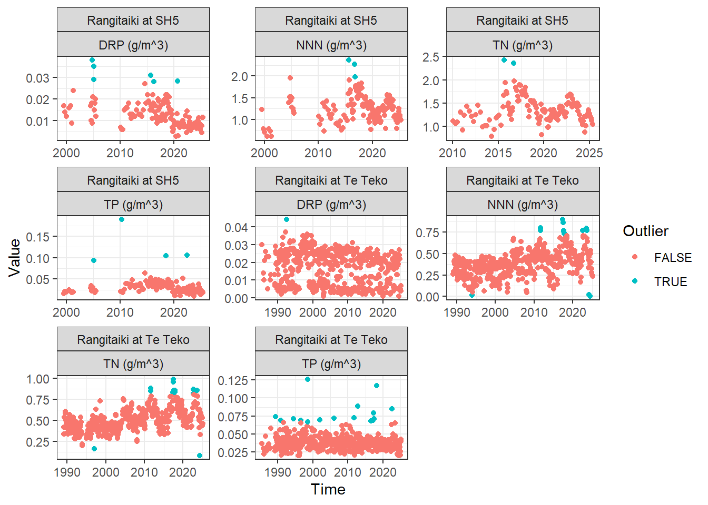
The blue dots in the figure above show which points have been identified as an outlier.
Challenge 5: Try other outlier detection methods by changing the ‘type’ argument. When you’re happy, use filter() to remove these outliers from the dataset. Make sure you re-define the output as WQ_Data
Click to see a solution
#run the outliers function. This creates a dataset of outlier values
Value_Output <- Outliers_Z_Score(dataset=WQ_Data %>% select("LocationName", "Site", "Time", "analyte", "Value"),
probability = 0.99,output = "outliers",type="chi")
#create a unique column so we can compare this to our original dataset.
Value_Output <-Value_Output %>%
mutate(Unique = paste0(Site,Time,Parameter))
#create a variable in the original dataset so we can identifiy our outliers.
WQ_Data <- WQ_Data %>%
mutate(Unique = paste0(Site,Time,analyte)) %>%
mutate(Outlier = ifelse(Unique %in% Value_Output$Unique, TRUE, FALSE)) %>%
select(Site, LocationName,Time,analyte,Value,Discharge,Outlier)
#create a plot so we can visualise our outliers.
WQ_Data%>%
ggplot(aes(x=Time, y=Value))+
geom_point(aes(colour=Outlier))+
theme_bw()+
facet_wrap(~LocationName+analyte,scales="free")WQ_Data <- WQ_Data %>%
filter(Outlier == FALSE) %>%
select(Site, LocationName,Time,analyte,Value,Discharge)Okay, good job. To make things a bit simpler for the next part we will only look at one site and one variable. We will come back to look at the other sites and variable in part 2 of this lesson when we learn how to batch process trends.
Let’s work with NNN at Rangitaiki at Te Teko.
NNN_Te_Teko <- WQ_Data %>%
filter(LocationName == "Rangitaiki at Te Teko") %>%
filter(analyte == "NNN (g/m^3)")Now we can begin the same process as before:
Append date information to the dataset.
Process censored values.
Challenge 6: See if you can complete steps 1 and 2 for the NNN_Te_Teko dataset. Remember, the timestamp needs to be converted to a date with the name ‘myDate’
Click to see a solution
NNN_Te_Teko <- NNN_Te_Teko %>%
mutate(myDate = as.Date(Time,tz="etc/GMT+12")) %>%
GetMoreDateInfo() %>%
RemoveAlphaDetect(ColToUse="Value")- Inspect the data.
Okay, now lets inspect the data to see what we are dealing with.
Inspect_Output_NNN_Te_Teko <- InspectTrendData(NNN_Te_Teko, EndYear = max(NNN_Te_Teko$Year),
ReturnALLincr=TRUE,do.plot = TRUE,mymain="Example 1",UseMidObs=TRUE)
#note the same nested structure.
ggarrange(Inspect_Output_NNN_Te_Teko[[3]][[1]],
ggarrange(Inspect_Output_NNN_Te_Teko[[3]][[2]],
Inspect_Output_NNN_Te_Teko[[3]][[3]],
Inspect_Output_NNN_Te_Teko[[3]][[4]],nrow=1,align="h"),nrow=2)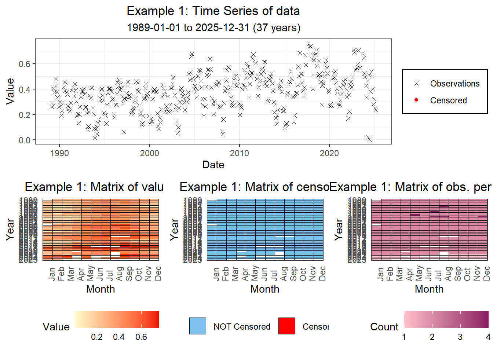
Okay. We can see that we have a few gaps and a few duplicates but nothing too bad. LWPTrends handles duplicate values within each time increment by taking the value that is closest to the mid-point of that increment. You can also tell it to take the median if you want.
If we look at the second sub-list item we can see that all time increments are satisfied. The output will allocate the time increment as the most frequent increment that satisfies all requirements, in this case ‘month’.
Inspect_Output_NNN_Te_Teko[[2]] Incr TrendPeriodL nobs nYear propYear nIncrYear propIncrYear propCen
1 Month 37 826 37 1 420 0.9459459 0
2 BiMonth 37 826 37 1 215 0.9684685 0
3 Qtr 37 826 37 1 145 0.9797297 0
4 BiAnn 37 826 37 1 73 0.9864865 0
nCenLevelsLT nCenLevelsGT nFlow DataOK
1 0 0 0 TRUE
2 0 0 0 TRUE
3 0 0 0 TRUE
4 0 0 0 TRUELet’s take the appended dataset created by the InspectTrendData function (sub-list item 1) and move to step 4.
NNN_Te_Teko <- Inspect_Output_NNN_Te_Teko[[1]]
- Check for seasonality.
Our time increment for NNN_Te_Teko is monthly so it’s highly likely there could be some seasonality in the data (i.e., some months could have higher concentrations than others due to climatic or anthropogenic factors). If the data are seasonal, we need to use a different trend analysis function than for non-seasonal data. But how do we determine if the data are seasonal? LWPTrends has a function for that called ‘GetSeason()’. GetSeason performs a Kruskal Wallis (non-parametric) test on the observations using the time increment as the explainatory variable. Use of this function is simple, you just need to input the dataset and tell it which column to look at.
Season_Output<-GetSeason(NNN_Te_Teko,ValuesToUse = "RawValue",mymain="Example 1",do.plot = TRUE)This function outputs another list object with three sub-list components: 1) an appended dataset, 2) the output from the Kruskal-Wallis test, and 3) a graph showing the output.
Challenge 7: Look at sub-list components 2 and 3 and come to a conclusion of whether the data is seasonal or not.
Click to see a solution
Season_Output[[2]] Observations KWstat pvalue SeasNote TimeIncr
Kruskal-Wallis chi-squared 826 149.7574 1.670623e-26 ok Monthly
Season
Kruskal-Wallis chi-squared Monthly#The Kruskal-Wallis test has a p value of 1.670623e-26 which means the data is highly seasonal.
Season_Output[[3]]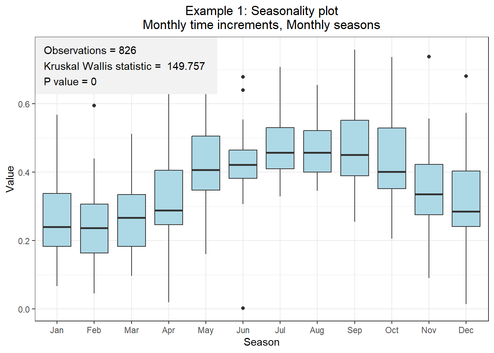
#This figure shows it nicely - it looks like nitrate concentrations peak over the winter months and are their lowest in summer.
#We need to run a seasonal trend analysis.- Define a co-variate and test relationship.
Okay, we know the data is seasonal, but could this be caused by seasonality in a co-variate, e.g. river discharge or rainfall? This is where co-variate adjustment comes in handy. The LWPTrends package allows us to determine the relationship between our observations and a potential co-variate, and then adjust our final values based on the values of the co-variate. For example, the concentration of an analyte is often related to discharge in rivers as this usually means there has been rainfall and mobilisation of contaminants sourced from the land. If this was the case, then an trends we find in our data could actually be caused by changes in river discharge rather than increased losses or loading from within the catchment.
With that being said, Snelder et al. (2021) do not recommend using flow adjusted trends for regional applications (i.e., assessing and reporting trends across many sites and variables in the context of regional state of environment reporting). They state that the purpose of flow-adjustment is to remove the confounding effect of flow so that the pattern of interest (the relationship between the observed water quality observations and time i.e., the trend) can be more confidently inferred. However, the definition of models describing observations of instantaneous flow is subjective and therefore there are unquantified uncertainties that arise due to procedural choices around flow adjustment that are likely to be made by individual analysts. Furthermore, there is evidence that trends are often associated with changes in the relationship between concentration and flow through the trend’s time period (Snelder and Kerr, 2022). However, flow adjustment (based on defining a relationship between observations and instantaneous flow) assumes that the concentration - flow relationship is constant through time. Violations of this assumption will affect the robustness of flow adjustment.
So in short, it’s complicated and somewhat subjective as to whether you should actually adjust values by discharge or not. But for the sake of this lesson, we will continue with the adjustment process using river discharge as a co-variate. The function we will use is called ‘AdjustValues()’ and there is a long list of possible inputs that we can change. Luckily, most of these have default values so we don’t really need to worry about them. We do, however, need to provide the dataset (referred to a ‘x’ - NNN_Te_Teko), the column that contains the values (referred to as ‘ValuesToAdjust’ - RawValue), and the column that contains the covariate (referred to as ‘Covariate’ - Discharge).
#take the seasonally appended dataset
NNN_Te_Teko <- Season_Output[[1]]
CV_Output<-AdjustValues(NNN_Te_Teko, method = c("Gam", "LogLog", "LOESS"), ValuesToAdjust = "RawValue", Covariate = "Discharge", Span = c(0.7), do.plot =T, plotpval=T, mymain="Example 1a")AdjustValues() produces yet another list object, but this time there are only two sub-list components: 1) a dataset of model performance (note that this is NOT an appended dataset), and 2) a plot of the different mondels.
Let’s look at component 2 first.
CV_Output[[2]]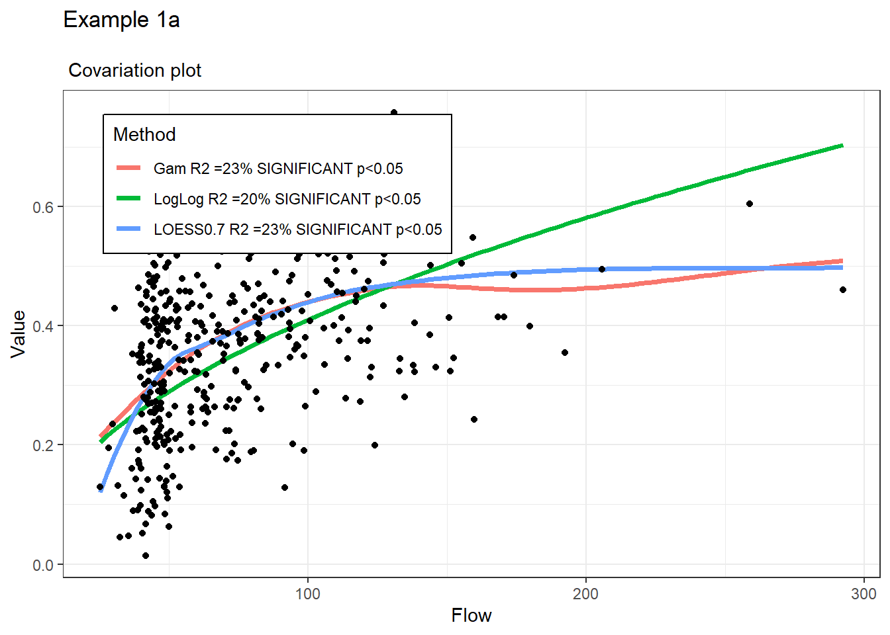
We can see that all models are technically significant (p<0.05). However, some models look better than others. The LogLog (green) model doesn’t appear to represents this releationship as well as the Gam or LOESS models. The Gam and LOESS models are close, but the LOESS model seems to provide better representation at lower flows. We can also see the R2 values in the plot legend, which align with our visual assessment, i.e., Gam and LOESS have an R2 of 0.23, i.e., discharge explains 23% of the variance in NNN concentrations.
We might decide that 23% is a significant amount, and that we need to address this. Let’s take the LOESS model, and we will also plot up the new dataset to see what our new flow adjusted points look like. As mentioned above, flow adjustment is not recommended for regional data, therefore LWP have not made the output from the AdjustValues function fit seamlessly into the next step. Therefore, we need to do some tidying up before we can move on. Let’s tidy up this output and plot the new adjusted values to see what the look like.
#take the output from the AdjustValues function.
CV_Adjusted_Values <- CV_Output[[1]]
#we will use the cbind (column bind) function to append on the relevant column from the CV adjusted output.
NNN_Te_Teko <- NNN_Te_Teko %>%
cbind(CV_Adjusted_Values %>% select(LOESS0.7)) %>%
rename("Flow_Adjusted" = "LOESS0.7")
#create a time-series plot of the flow adjusted results.
P_FA <- NNN_Te_Teko %>%
ggplot()+
geom_point(aes(x=Time,y=Flow_Adjusted))+
theme_bw()
#create a time-series plot of the raw results.
P_RD <- NNN_Te_Teko %>%
ggplot()+
geom_point(aes(x=Time,y=RawValue))+
theme_bw()
#create a time-series plot of the discharge.
P_DC <- NNN_Te_Teko %>%
ggplot()+
geom_line(aes(x=Time,y=Discharge),colour="midnightblue")+
theme_bw()
#combine them together in a ggarrange figure.
ggarrange(P_RD,P_FA,P_DC,nrow=3, align = "h")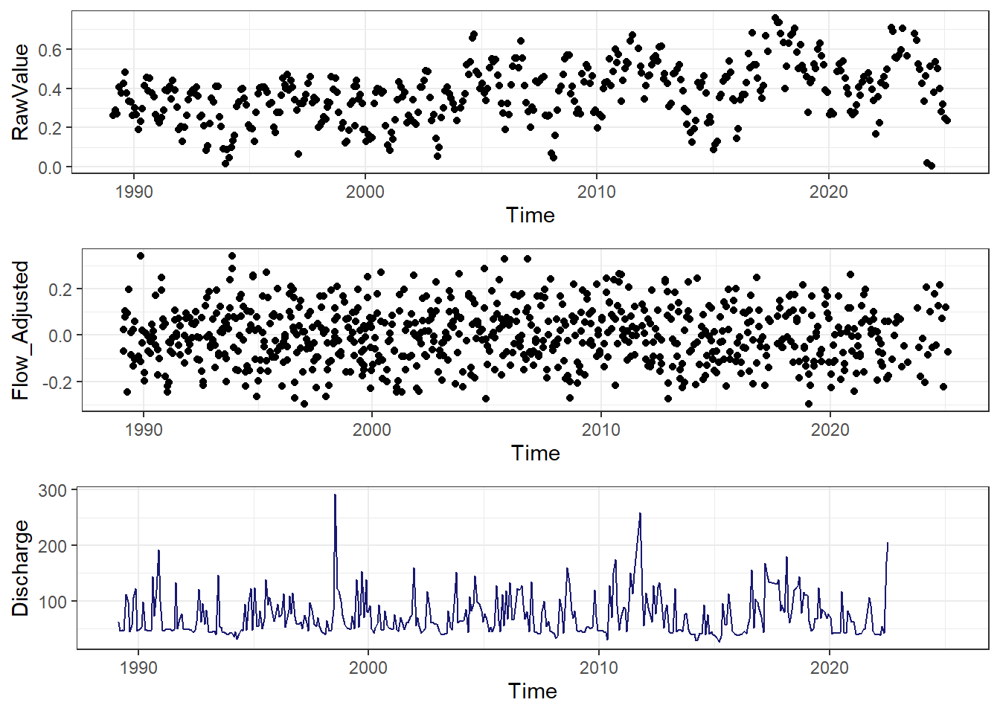
Hmm..I will leave you to come to your own conclusion, but you can see why Snelder et al. (2021) think flow adjustment can be subjective.
Regardless, let’s take the flow adjusted values through to the final two steps.
- Run trend analysis.
We know from step 4 that we need to run a seasonal trend analysis. The function for this is called ‘SeasonalTrendAnalysis()’ and we need to tell it to use our ‘Flow_Adjusted’ column, but keep the ‘RawValue’ column for descriptive statistics. You can do this using the code below:
Trend_Analysis_Output_NNN_Te_Teko <-SeasonalTrendAnalysis(NNN_Te_Teko, ValuesToUse="Flow_Adjusted", RawValues=FALSE, ValuesToUseforMedian="RawValue", mymain="Example 1a: Flow Adjusted Trend", do.plot=T)
Trend_Analysis_Output_NNN_Te_Teko[[2]]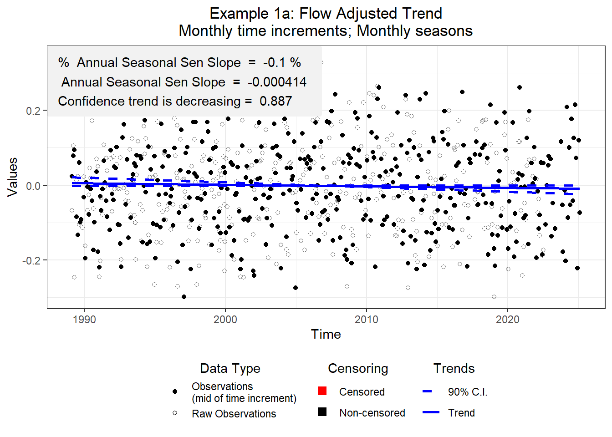
- Classify the output.
Now we can classify the output in the same way as before (using ‘AssignConfCat’).
Trend_Analysis_Output_NNN_Te_Teko <- Trend_Analysis_Output_NNN_Te_Teko[[1]]
Trend_Analysis_Output_NNN_Te_Teko <- Trend_Analysis_Output_NNN_Te_Teko %>% mutate(analyte = "NNN")
Trend_Analysis_Output_NNN_Te_Teko$Direction <- AssignConfCat(Trend_Analysis_Output_NNN_Te_Teko,CatType="Improve",Reverse=c("VC"))
Trend_Analysis_Output_NNN_Te_Teko nObs nTimeIncr S VarS D tau Z p C
1 800 412 -290 57074 6910 -0.04196816 -1.209703 0.226393 0.8868035
Cd prop.censored prop.unique no.censorlevels TimeIncr SeasIncr Median
1 0.8868035 0 0.5 0 Monthly Monthly 0.3735
AnnualSenSlope Sen_Lci Sen_Uci AnalysisNote Percent.annual.change
1 -0.0004142955 -0.001240764 2.973935e-05 ok -0.1109225
TrendDirection analyte Direction
1 Decreasing NNN Likely improvingWhew. We finally have a result. You can see that NNN is ‘Likely improving’ between 1990 and 2025. Interesting, this is very different to the obvious visual trend in the raw data.
Challenge 8: What would the result be if we took our un-adjusted values instead of our flow-adjusted values? Which version do you think is more appropriate?
Click to see a solution
Trend_Analysis_Output_NNN_Te_Teko_Raw <-SeasonalTrendAnalysis(NNN_Te_Teko, ValuesToUse="RawValue", ValuesToUseforMedian="RawValue", mymain="Example 1a: Flow Adjusted Trend", do.plot=T)
Trend_Analysis_Output_NNN_Te_Teko_Raw[[2]]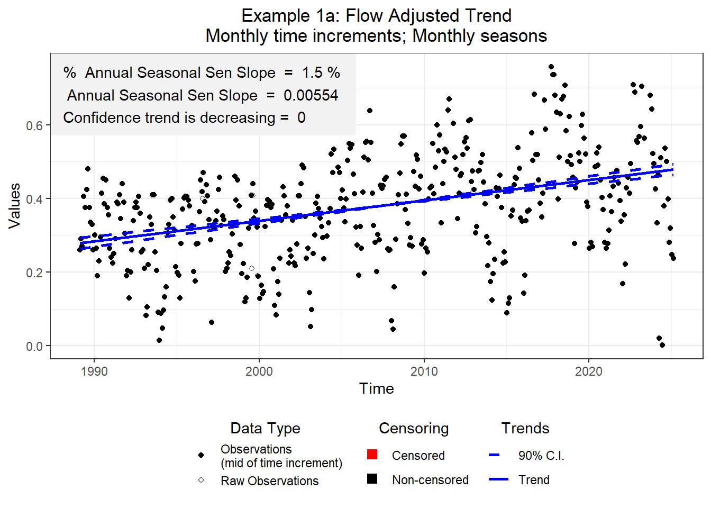
Trend_Analysis_Output_NNN_Te_Teko_Raw <- Trend_Analysis_Output_NNN_Te_Teko_Raw[[1]]
Trend_Analysis_Output_NNN_Te_Teko_Raw <- Trend_Analysis_Output_NNN_Te_Teko_Raw %>% mutate(analyte = "NNN")
Trend_Analysis_Output_NNN_Te_Teko_Raw$Direction <- AssignConfCat(Trend_Analysis_Output_NNN_Te_Teko_Raw,CatType="Improve",Reverse=c("VC"))
Trend_Analysis_Output_NNN_Te_Teko_Raw nObs nTimeIncr S VarS D tau Z p C
1 826 420 2712 59795.33 7154 0.3790886 11.08654 1.458258e-28 1
Cd prop.censored prop.unique no.censorlevels TimeIncr SeasIncr
1 7.291291e-29 0 0.3474576 0 Monthly Monthly
Median AnnualSenSlope Sen_Lci Sen_Uci AnalysisNote
1 0.3755 0.005538401 0.004753135 0.006391111 ok
Percent.annual.change TrendDirection analyte Direction
1 1.47494 Increasing NNN Very likely degradingThe un-adjusted trend would be ‘Very likely degrading’.
Well, that’s it for this lesson but we have only covered half of the trend analysis content. I will try to develop a follow up lesson where we use the rest of the WQ_Data dataset to look at batch processing.